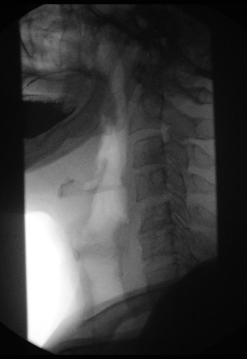

Barium Swallow
Introduction
Barium swallow is a dedicated test of the pharynx, oesophagus, and proximal stomach, and may be performed as a single or double contrast study. The study is often "modified" to suit the history and symptoms of the individual patient, but it is often useful to evaluate the entire pathway from the lips to the gastric fundus.
Upper GI endoscopy (UGIE or EGD) has largely replaced the barium swallow for the assessment of peptic ulcer disease and the evaluation of haematemesis.

Normal barium swallow animation
Indications
- high or low dysphagia(difficulty swallowing)
- gastro-oesophageal reflux disease (GORD/GERD)
- assessment of a hiatus hernia
- generalised epigastric pain
- globus hystericus
- persistent vomiting
- assessment of fistula
- inability to pass the endoscope during UGIE
Contraindications
Water-soluble contrast agents should be used instead of barium in the following cases:
-
suspected perforation
-
post-operative assessment for leak
Caution should be exercised when using water-soluble contrast agents in patients with a risk for aspiration. Aspiration of high-osmolarity water-soluble contrast agents has been associated with massive pulmonary oedema and subsequent death. A low osmolarity agent such as Omnipaque may be used in this setting.
Procedure
Evaluation of pharynx:
-
scout films are obtained to rule out any foreign body, abscess or fistula
-
the examination is performed in the upright lateral position after swallowing high-density barium
-
right lateral views should be obtained initially to rule out aspiration or penetration, then frontal views are obtained
-
dynamic videofluoroscopic examination should be simultaneously acquired for optimal evaluation
-
spots are obtained quickly during suspended respiration and under phonation (patient instructed to say "Eeeee....") to distend the hypopharynx
Evaluation of oesophagus:
-
double contrast barium swallow is the preferred mode of examination
-
the patient swallows a packet of effervescent agent and then rapidly gulps a packet of high-density barium
-
frontal and left posterior oblique views are taken
-
two exposures are centred on the upper/mid oesophagus and two on distal oesophagus
-
then, the table is brought to the horizontal position and patient turns to right lateral position for a view of gastric cardia and fundus
the patient drinks low-density barium in prone right anterior oblique position:
-
two to five separate swallows are assessed to evaluate motility of the oesophagus
-
this also permits evaluation of distal oesophagus and GE junction, delineating lower oesophagal rings and strictures
-
patient is finally turned onto the left side and then onto the back so that barium pools in the gastric fundus
-
GE junction is then observed fluoroscopically as the patient slowly turns to right, looking for elicited gastro-esophageal reflux
-
straight leg raising, Valsalva manoeuvre or drinking water (water syphon test) can also elicit gastro-oesophageal reflux
-
additional views like mucosal relief views are useful in suspected tumours, varices or oesophagitis
Radiographic features
On the lateral view, the tongue base and epiglottis are seen from the side, with the vallecula between. A posterior indentation caused by contraction of the cricopharyngeus muscle indicates the commencement of the cervical oesophagus.
On the frontal view, the piriform fossae are outlined by barium and the epiglottis and the base of the tongue show as filling defects in the midline.
The cervical oesophagus lies on the ventral surface of the cervical spine.
The thoracic oesophagus is best demonstrated in the right anterior oblique position.